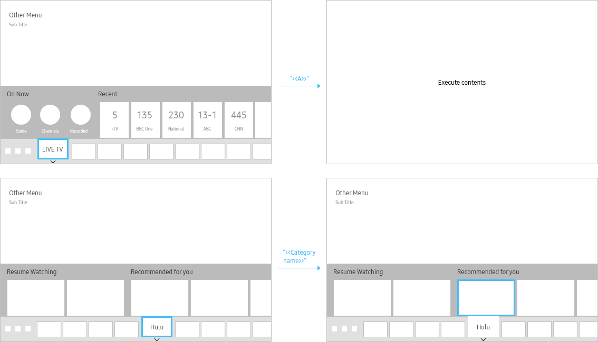
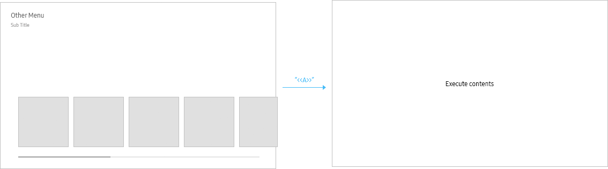
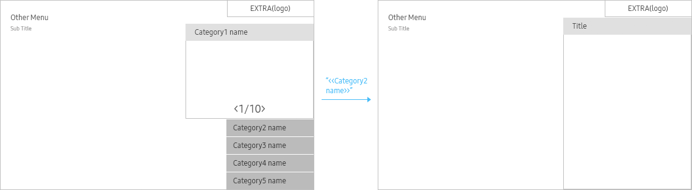
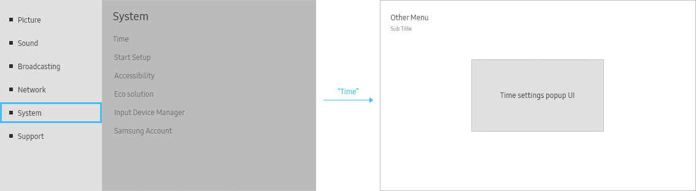
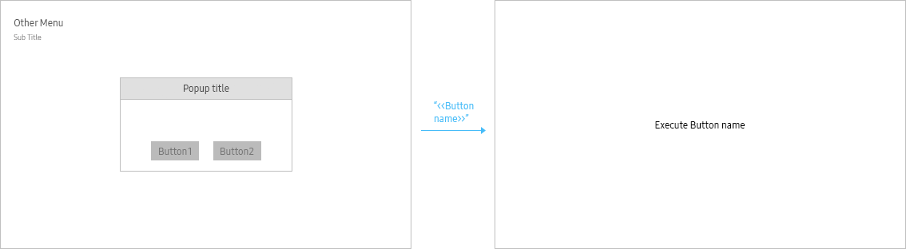
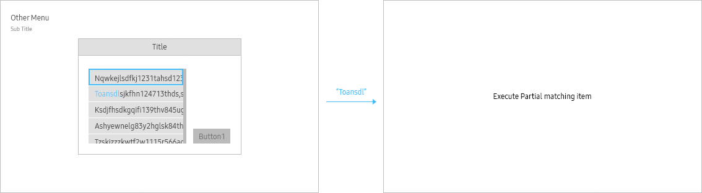

Voice Touch
- Definition
-
This feature is for selecting item by saying its label, registered as the SID, which is actually seen on the screen and surely selectable
(* Exceptionally, for uttering the <<Category Name>> or <<Sub Header>>, which is not a selective item, move focus to the very first item in the category.) - Usage
-
- Eden UI
- 
- Search Result
- 
- Extra
- 
- Setting
- 
- Popups
- 
- Interaction
-
- Motion Feedback
- Move focus to the uttered item first, then show the selecting motion on it.
- Partial Matching (TBD)
-
If the user uttered the part of the whole label text among the labels of the subjective buttons in the current screen,
system can parse it partially matches and select it. If the multiple candidates are parsed out, show the candidate list to decide it.- 
- Specs
-
-
- UI specifications
The app that supports this feature needs to follow these rules: -
- . Do not use text that is special character or abbreviation.
- . Do not use long txt that cannot see totally in a moment.
- . Do not mix the language for one label. (ex. TV스피커)
- . For general control, grab the Voice Key(TBD) and run as it is designated. (ex. Next page, Previous page)
- - How to develop voice touch feature
-
- . The façade of Voice Touch feature is the method of extracting the displaying text processed by UIFW of EFL, VOLT or HALO and its coordination to select by speaking it.
- . Most of text will be registered by the API provided by basic UIFW, however, each app shall register its availability for each text in advance.
- . Partial-matching shall support but limited yet (TBD)
- - Limitations
-
- . The app that does not followed by UI specification cannot support Voice Touch feature.
- . UI component that is not selectable (ex. Gauge controls in Backlight UI) cannot control by Voice Touch.
- . This will be controllable on EFL or VOLT. (The UI based on webbrowser or webapp cannot be supported yet due to technical reason).
-
- UI specifications